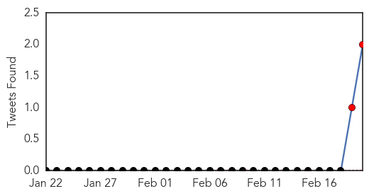

Hepatitis
30-Day Web Trend
9 alerts, 1 warnings

30-Day Twitter Trend
0 alerts, 0 warnings

Article Locations

Article Confidences

Top Articles:
- 0.943
- Uproar Over Hepatitis Outbreak in Armenia
- 0.940
- Infections from berries expected to rise
- 0.902
- Frozen berries linked to Hep A
- 0.792
- Finger-pointing, lawsuits likely to follow 'superbug' scare
- 0.792
- Finger-pointing, lawsuits likely to follow 'superbug' scare
- 0.787
- Finger-pointing, lawsuits likely to follow 'superbug' scare
- 0.752
- New hope for hepatitis C, an often hidden disease
- 0.733
- Lawyer: Teen infected by 'superbug' struggling to survive
- 0.699
- Finger-pointing, lawsuits likely to follow 'superbug' scare
- 0.606
- Berries off Aus shelves after Hep A scare
- 0.603
- Hygiene 'likely cause' of berries hep A
- 0.597
- Hep A watch on children at centre
- 0.564
- The berries Hepatitis A scare stems from a bigger issue.
- 0.535
- Raspberries common link in hep A outbreak
Top Tweets:
-
No tweets found for Feb 20, 2015
Cholera
30-Day Web Trend
0 alerts, 0 warnings

30-Day Twitter Trend
6 alerts, 0 warnings

Article Locations

Article Confidences

Top Articles:
- 0.997
- Mozambique cholera deal toll reaches 31
- 0.995
- UN Praises Cuba for Haiti Cholera Response
- 0.993
- Ancient Italian Churchyard Studied For Cholera DNA
- 0.990
- Malawi: Epidemics threaten survivors one month after the flood
- 0.987
- Malawi: Acute medical needs a month after the floods
- 0.979
- Six killed in suspected cholera outbreak in southern Nigeria
- 0.935
- UN Coordinator Against Cholera in Haiti to Visit Cuba
- 0.799
- Ghana, Business Advice, Jobs, News, Business Directory, Real Estate, Finance, Forms, Auto
- 0.786
- Cholera outbreaks stark reminder to get serious about sanitation
- 0.741
- NDDC Donates Drugs To Bayelsa Govt
- 0.687
- Mozambique: Floods Emergency appeal MDRMZ011 operations update n° 2 - Mozambique
- 0.669
- Uganda: Cholera Outbreak DREF operation n° MDRUG032 Final Report, 19 Feb 2015 - Uganda
- 0.518
- Wise Water Foundation calls on Methodist Presiding Bishop
Top Tweets:
- 0.896
- RT: Southern Africa Wkly Report 10-16Feb: 1908 cholera cases w 24 deaths confirmed in Nampula, Niassa & Tete Mozambique http://…
- 0.834
- & colleagues on premptive use of cholera vaccines in high risk areas of Ebola countries http://t.co/WYQpfxmMyx vaccineswork